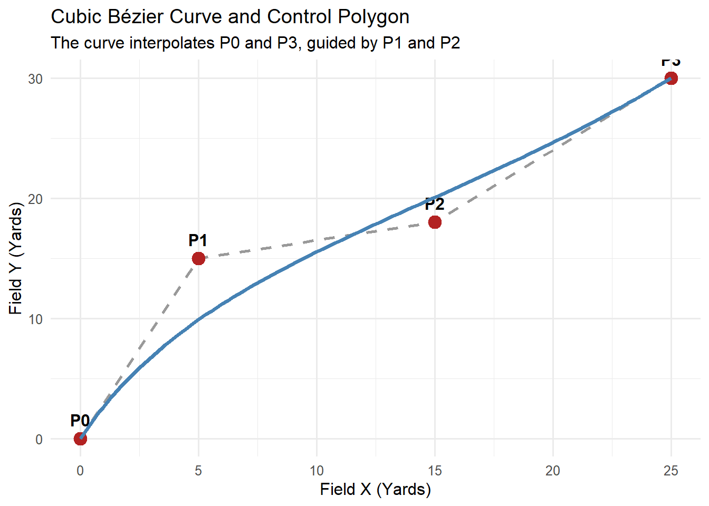
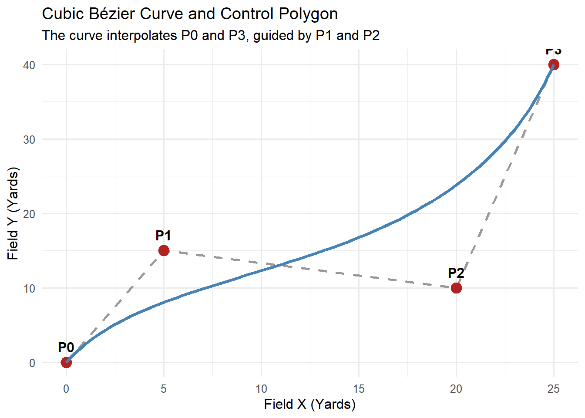
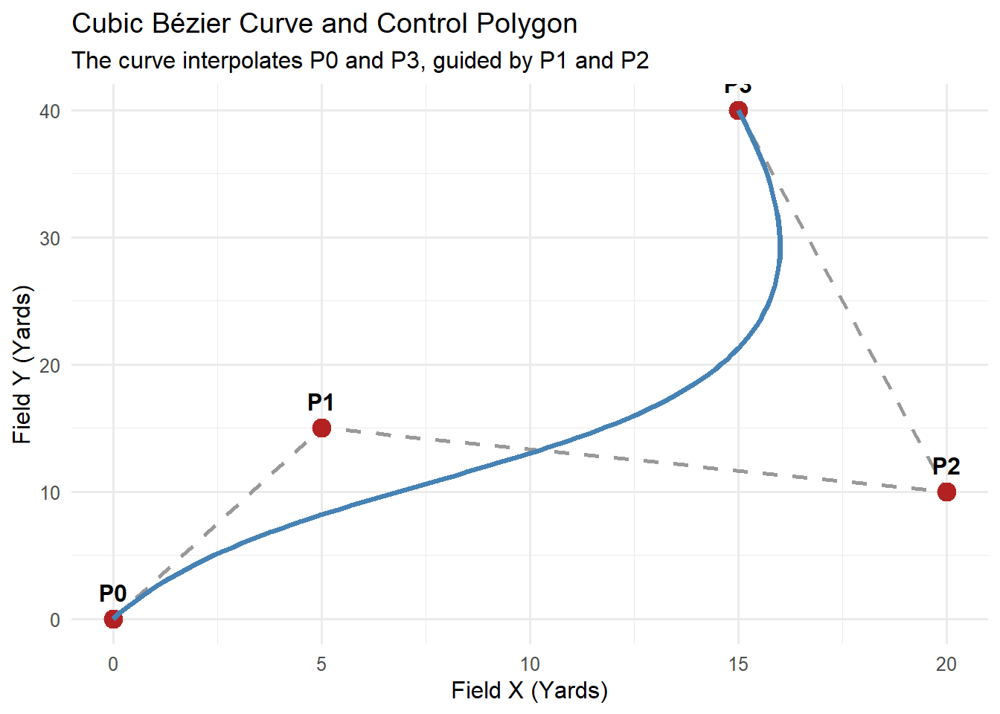
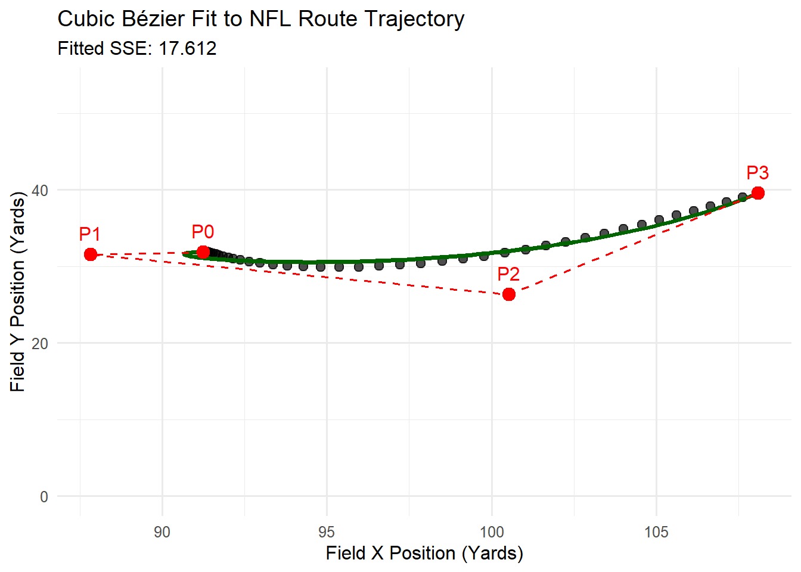
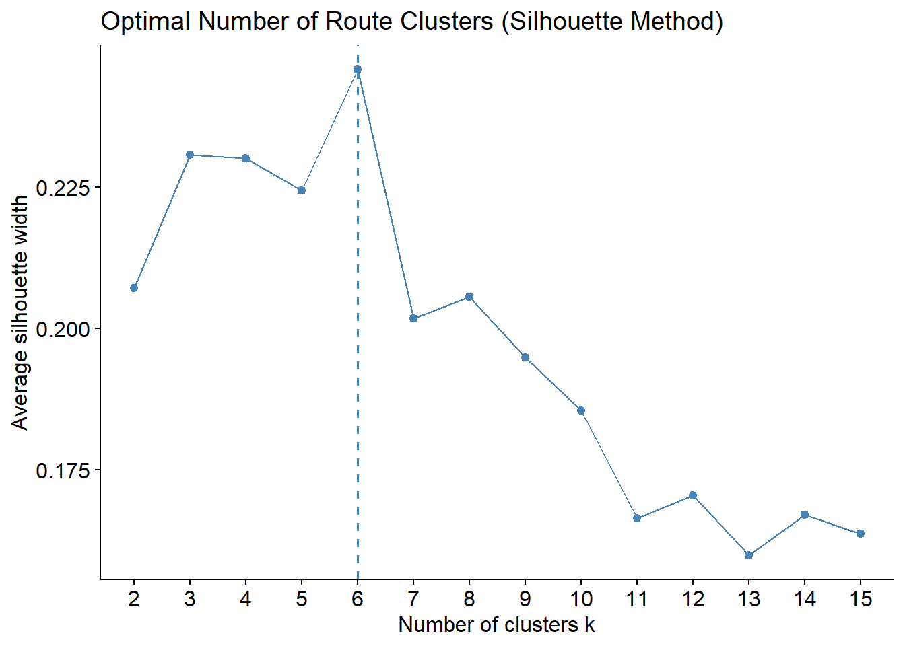

Code
options(bitmapType = "cairo")
library(tidyverse)
library(patchwork)
library(cluster)
library(factoextra)
library(ggforce)
library(gganimate)
library(gifski)
library(av)
theme_set(theme_minimal(base_size = 12))Applied Modeling with NFL Big Data Bowl Tracking Data
options(bitmapType = "cairo")
library(tidyverse)
library(patchwork)
library(cluster)
library(factoextra)
library(ggforce)
library(gganimate)
library(gifski)
library(av)
theme_set(theme_minimal(base_size = 12))In sports analytics—specifically when analyzing high-frequency spatio-temporal tracking data from optical or chip-based technologies (such as Zebra MotionWorks used in the NFL)—player trajectories are often represented as discrete sequences of \((x, y)\) coordinates sampled at regular time intervals (e.g., 10 Hz).
In this document, we explore Bézier curves, a foundational class of parametric curves widely used in computer graphics, motion planning, and movement modeling.
Here’s a link to one of the first uses of these curves to create a playbook of curves for basketball. Possession Sketches: Mapping NBA Strategies
A Bézier curve is a parametric curve defined as a weighted linear combination of control points \(P_0, P_1, \dots, P_n\), where the weights are given by Bernstein basis polynomials.
For a parameter \(t \in [0, 1]\) and \(n+1\) control points, an \(n\)-th degree Bézier curve is defined as:
\[B(t) = \sum_{i=0}^{n} \binom{n}{i} (1-t)^{n-i} t^i P_i\]
Connects two control points \(P_0\) and \(P_1\) in a straight line:
\[B(t) = (1-t)P_0 + t P_1\]
Uses three control points \(P_0, P_1, P_2\):
\[B(t) = (1-t)^2 P_0 + 2(1-t)t P_1 + t^2 P_2\]
Uses four control points \(P_0, P_1, P_2, P_3\):
\[B(t) = (1-t)^3 P_0 + 3(1-t)^2 t P_1 + 3(1-t) t^2 P_2 + t^3 P_3\]
We’re going to use the cubic curves.
Let’s build a functional R implementation for evaluating Bézier curves.
Load the data (only need to do this once)
player_play=read.csv("https://webpages.charlotte.edu/~mschuck1/sports/data/player_play.csv")
players=read.csv("https://webpages.charlotte.edu/~mschuck1/sports/data/players.csv")
tracking=read.csv("https://webpages.charlotte.edu/~mschuck1/sports/data/game_tracking_2023.csv")Filter the data
#get only the WRs and their routes on pass plays
players = players %>%
filter(nfl_position=="WR")
player_play=player_play %>%
filter(nfl_id %in% players$nfl_id) %>%
filter(pass_result %in% c("I","C","IN"))
tracking= tracking %>%
filter(play_id %in% player_play$play_id) %>%
filter(nfl_id %in% player_play$nfl_id)Below we are going to subset a single play so that we can just look at one play at a time.
# 2023091000 1382 55904
#2023111901 1891 55939
#2023122403 3331 56220
# 2023102207 2638 55884
#2023123114 2735 56220
g_id= 2023123114
p_id= 2735
n_id= 56220
#subset a single play
df_single_play=tracking %>%
filter(game_id == g_id)%>%
filter(play_id==p_id)%>%
filter(nfl_id == n_id )
player_play_info=player_play %>%
filter(game_id == g_id)%>%
filter(play_id==p_id)%>%
filter(nfl_id == n_id )
last_track=nrow(df_single_play)
which.snap=which(df_single_play$event=="ball_snap")
which.outcome=which(str_detect(df_single_play$event,"outcome"))
df_single_play=df_single_play[which.snap:min(which.outcome,last_track),]
tracking$full_id=paste(tracking$game_id,tracking$play_id,tracking$nfl_id)# Function to calculate the i-th Bernstein basis polynomial of degree n at parameter t
bernstein_poly <- function(i, n, t) {
choose(n, i) * ((1 - t)^(n - i)) * (t^i)
}
# Evaluate a Bézier curve given an N x 2 matrix of control points and vector t
eval_bezier <- function(control_points, t_vec = seq(0, 1, length.out = 100)) {
n <- nrow(control_points) - 1
# Matrix to hold output (x, y) coordinates
curve_pts <- matrix(0, nrow = length(t_vec), ncol = 2)
colnames(curve_pts) <- c("x", "y")
for (i in 0:n) {
basis <- bernstein_poly(i, n, t_vec)
curve_pts[, 1] <- curve_pts[, 1] + basis * control_points[i + 1, 1]
curve_pts[, 2] <- curve_pts[, 2] + basis * control_points[i + 1, 2]
}
as_tibble(curve_pts) %>% mutate(t = t_vec)
}# Define control points for a cubic curve (e.g., a receiver's corner route)
control_pts <- tibble(
x = c(0, 5, 15, 25),
y = c(0, 15, 18, 30),
point_id = paste0("P", 0:3)
)
# Generate curve evaluation points
curve_df <- eval_bezier(as.matrix(control_pts[, c("x", "y")]))
# Plot the curve along with its control polygon
ggplot() +
geom_path(data = control_pts, aes(x = x, y = y), color = "gray60", linetype = "dashed", size = 1) +
geom_point(data = control_pts, aes(x = x, y = y), color = "firebrick", size = 4) +
geom_text(data = control_pts, aes(x = x, y = y, label = point_id), vjust = -1, fontface = "bold") +
geom_path(data = curve_df, aes(x = x, y = y), color = "steelblue", size = 1.3) +
labs(
title = "Cubic Bézier Curve and Control Polygon",
subtitle = "The curve interpolates P0 and P3, guided by P1 and P2",
x = "Field X (Yards)", y = "Field Y (Yards)"
)
Changing the control points. Below we change the values of P2 to get a different curve.
# Define control points for a cubic curve (e.g., a receiver's corner route)
control_pts <- tibble(
x = c(0, 5, 20, 25),
y = c(0, 15, 10, 40),
point_id = paste0("P", 0:3)
)
# Generate curve evaluation points
curve_df <- eval_bezier(as.matrix(control_pts[, c("x", "y")]))
# Plot the curve along with its control polygon
ggplot() +
geom_path(data = control_pts, aes(x = x, y = y), color = "gray60", linetype = "dashed", size = 1) +
geom_point(data = control_pts, aes(x = x, y = y), color = "firebrick", size = 4) +
geom_text(data = control_pts, aes(x = x, y = y, label = point_id), vjust = -1, fontface = "bold") +
geom_path(data = curve_df, aes(x = x, y = y), color = "steelblue", size = 1.3) +
labs(
title = "Cubic Bézier Curve and Control Polygon",
subtitle = "The curve interpolates P0 and P3, guided by P1 and P2",
x = "Field X (Yards)", y = "Field Y (Yards)"
)
Changing the control points. Below we change the values of P3 to get a different curve.
# Define control points for a cubic curve (e.g., a receiver's corner route)
control_pts <- tibble(
x = c(0, 5, 20, 15),
y = c(0, 15, 10, 40),
point_id = paste0("P", 0:3)
)
# Generate curve evaluation points
curve_df <- eval_bezier(as.matrix(control_pts[, c("x", "y")]))
# Plot the curve along with its control polygon
ggplot() +
geom_path(data = control_pts, aes(x = x, y = y), color = "gray60", linetype = "dashed", size = 1) +
geom_point(data = control_pts, aes(x = x, y = y), color = "firebrick", size = 4) +
geom_text(data = control_pts, aes(x = x, y = y, label = point_id), vjust = -1, fontface = "bold") +
geom_path(data = curve_df, aes(x = x, y = y), color = "steelblue", size = 1.3) +
labs(
title = "Cubic Bézier Curve and Control Polygon",
subtitle = "The curve interpolates P0 and P3, guided by P1 and P2",
x = "Field X (Yards)", y = "Field Y (Yards)"
)
Change the values of the points to make an S shape that goes close to the point (10,10).
Increase all of the value for x and y in the Points by 20. How does the curve change?
We will parameterize the time steps \(t_i \in [0, 1]\) based on tracking frames, and fit control points using Nonlinear Least Squares (NLS) or numerical optimization (optim).
To fit a parametric curve \((x(t), y(t))\) to observed data points \((x_k, y_k)_{k=1}^K\), we normalize time frames to \(t_k = \frac{k-1}{K-1} \in [0, 1]\).
We then define the sum of squared Euclidean error (SSE):
\[\text{SSE}(P_0, P_1, P_2, P_3) = \sum_{k=1}^K \left[ \left( x_k - X_B(t_k) \right)^2 + \left( y_k - Y_B(t_k) \right)^2 \right]\]
Because \(P_0 = (x_1, y_1)\) and \(P_3 = (x_K, y_K)\) are fixed by the trajectory’s start and end points, we only need to optimize over the intermediate control points \((P_1, P_2)\).
Below is code I got from Gemini to estimate values for \(P_0, P_1, P_2, P_3\).
fit_cubic_bezier <- function(obs_x, obs_y) {
K <- length(obs_x)
t_vec <- seq(0, 1, length.out = K)
# Endpoints are interpolated directly
P0 <- c(obs_x[1], obs_y[1])
P3 <- c(obs_x[K], obs_y[K])
# Initial guesses for intermediate control points P1 and P2 (1/3 and 2/3 along straight path)
init_params <- c(
P1_x = P0[1] + (P3[1] - P0[1]) / 3,
P1_y = P0[2] + (P3[2] - P0[2]) / 3,
P2_x = P0[1] + 2 * (P3[1] - P0[1]) / 3,
P2_y = P0[2] + 2 * (P3[2] - P0[2]) / 3
)
# SSE loss function
loss_fn <- function(params) {
ctrl_mat <- matrix(c(
P0[1], P0[2],
params["P1_x"], params["P1_y"],
params["P2_x"], params["P2_y"],
P3[1], P3[2]
), ncol = 2, byrow = TRUE)
pred <- eval_bezier(ctrl_mat, t_vec = t_vec)
sum((obs_x - pred$x)^2 + (obs_y - pred$y)^2)
}
# Perform optimization using BFGS
opt <- optim(par = init_params, fn = loss_fn, method = "BFGS")
# Construct final control point matrix
fitted_ctrl <- matrix(c(
P0[1], P0[2],
opt$par["P1_x"], opt$par["P1_y"],
opt$par["P2_x"], opt$par["P2_y"],
P3[1], P3[2]
), ncol = 2, byrow = TRUE)
colnames(fitted_ctrl) <- c("x", "y")
list(
control_points = as_tibble(fitted_ctrl) %>% mutate(point_id = paste0("P", 0:3)),
sse = opt$value,
fitted_points = eval_bezier(fitted_ctrl, t_vec = seq(0, 1, length.out = 100))
)
}route_data <- df_single_play
head(route_data) game_id play_id nfl_id time x y s a dis
10 2023123114 2735 56220 2024-01-01T03:23:40.500 91.24 31.88 0.00 0.00 0.00
11 2023123114 2735 56220 2024-01-01T03:23:40.600 91.25 31.89 0.00 0.00 0.00
12 2023123114 2735 56220 2024-01-01T03:23:40.700 91.25 31.89 0.02 0.43 0.00
13 2023123114 2735 56220 2024-01-01T03:23:40.800 91.26 31.89 0.10 0.85 0.01
14 2023123114 2735 56220 2024-01-01T03:23:40.900 91.27 31.90 0.24 1.15 0.02
15 2023123114 2735 56220 2024-01-01T03:23:41.000 91.30 31.91 0.33 1.05 0.03
o dir event
10 75.31 13.04 ball_snap
11 75.31 33.63 <NA>
12 75.31 58.98 <NA>
13 75.31 60.23 <NA>
14 75.31 68.11 <NA>
15 73.43 64.22 <NA>Below we fit data to our route. In the image the dots are the actual and the line is the Bezier fit.
fit_results <- fit_cubic_bezier(route_data$x, route_data$y)
ggplot() +
# Raw noisy tracking points
geom_point(data = route_data, aes(x = x, y = y), color = "black", alpha = 0.7, size = 2.5) +
# Fitted Bézier curve
geom_path(data = fit_results$fitted_points, aes(x = x, y = y), color = "darkgreen", size = 1.3) +
# Control points and polygon
geom_path(data = fit_results$control_points, aes(x = x, y = y), color = "red", linetype = "dashed") +
geom_point(data = fit_results$control_points, aes(x = x, y = y), color = "red", size = 3.5) +
geom_text(data = fit_results$control_points, aes(x = x, y = y, label = point_id), vjust = -1, color = "red") +
labs(
title = "Cubic Bézier Fit to NFL Route Trajectory",
subtitle = paste("Fitted SSE:", round(fit_results$sse, 3)),
x = "Field X Position (Yards)",
y = "Field Y Position (Yards)"
)+coord_cartesian(ylim=c(0,53.3))
gganimate# Prepare fine-grained evaluation grid for smooth animation
anim_fitted <- fit_results$fitted_points %>%
mutate(frame_pct = t * 100)
# Merge raw tracking frames with dynamic parameter progression
route_data_anim <- route_data %>%
mutate(frame_id=1:nrow(route_data))%>%
mutate(t_raw = (frame_id - min(frame_id)) / (max(frame_id) - min(frame_id)))
p_anim <- ggplot() +
# Background control polygon
geom_path(data = fit_results$control_points, aes(x = x, y = y), color = "gray70", linetype = "dashed") +
geom_point(data = fit_results$control_points, aes(x = x, y = y), color = "red", size = 3) +
geom_text(data = fit_results$control_points, aes(x = x, y = y, label = point_id), vjust = -1, color = "red") +
# All tracking points (faded in background)
geom_point(data = route_data, aes(x = x, y = y), color = "gray50", alpha = 0.4, size = 2) +
# Progressive Bézier curve path
geom_path(data = anim_fitted, aes(x = x, y = y), color = "darkgreen", size = 1.4) +
# Active player position on the fitted curve
geom_point(data = anim_fitted, aes(x = x, y = y), color = "navy", size = 5) +
labs(
title = "NFL Player Route Tracing via Cubic Bézier Curve",
subtitle = "Parametric time step: t = {sprintf('%.2f', frame_along)}",
x = "Field X Position (Yards)",
y = "Field Y Position (Yards)"
) +coord_cartesian(ylim=c(0,53.3))+
transition_reveal(t)
# Render animation (GIF output)
animate(p_anim, nframes = 60, fps = 10, width = 700, height = 500, res = 100, units="px",renderer = av_renderer())anim_save("play.gif")In the above animation, we see that \(P_1\) is nearly directly to the left of \(P_0\) and that in the estimated Bezier curve, the player appears to go backward. Why might that be?
Here we
#get the distinct game_id, play_id, nfl_id combinations
routes=tracking %>% distinct(game_id,play_id,nfl_id)
# count the number of routes
n_routes=nrow(routes)
# Find a couple of other plays by looking through the routes dataframe and animate them.
bezier_out=data.frame(x0=rep(NA,n_routes),
y0=rep(NA,n_routes),
x1=rep(NA,n_routes),
y1=rep(NA,n_routes),
x2=rep(NA,n_routes),
y2=rep(NA,n_routes),
x3=rep(NA,n_routes),
y3=rep(NA,n_routes),
route_ran=rep(NA,n_routes))Next we will take all the WR routes and get the Bezier curves for them.
Note that the chunk of code below is disabled.
for (i in 1:n_routes)
{
print(i)
df_single_play=tracking %>%
filter(game_id == routes$game_id[i])%>%
filter(play_id==routes$play_id[i])%>%
filter(nfl_id == routes$nfl_id[i] )
player_play_info=player_play %>%
filter(game_id == routes$game_id[i])%>%
filter(play_id==routes$play_id[i])%>%
filter(nfl_id == routes$nfl_id[i] )
if (nrow(player_play_info)>0){
if(player_play_info$play_direction=="left"){
df_single_play = df_single_play %>%
mutate(x=120-x,
y=53.3333-y)
}
df_single_play=df_single_play %>%
mutate(x=x-x[1],
y=y-y[1])
last_track=nrow(df_single_play)
which.snap=which(str_detect(df_single_play$event,"snap"))
if(length(which.snap)<1) which.snap=1
which.outcome=which(str_detect(df_single_play$event,"outcome"))
df_single_play=df_single_play[which.snap:min(which.outcome,last_track),]
fit_results <- fit_cubic_bezier(df_single_play$x, df_single_play$y)
bezier_out[i,]=c(fit_results$control_points$x[1],fit_results$control_points$y[1],
fit_results$control_points$x[2],fit_results$control_points$y[2],
fit_results$control_points$x[3],fit_results$control_points$y[3],
fit_results$control_points$x[4],fit_results$control_points$y[4],
player_play_info$route_ran)
}
}
#write.csv(bezier_out,"bezier_out.csv")bezier_out=read.csv("https://webpages.charlotte.edu/~mschuck1/sports/data/bezier_out.csv")
drop_na=which(is.na(bezier_out$x0))Below we create a data frame for the clustering the bezier Points for each route.
bezier_cluster = bezier_out[-drop_na,] %>%
select(-route_ran) %>%
select(-X)%>%
mutate(x0=as.numeric(x0),
y0=as.numeric(y0),
x1=as.numeric(x1),
y1=as.numeric(y1),
x2=as.numeric(x2),
y2=as.numeric(y2),
x3=as.numeric(x3),
y3=as.numeric(y3))
scaled_features <- scale(bezier_cluster)This is a way to find the number of clusters but not sure that I love it.
# Evaluate optimal k using Silhouette Method
p_optimal_k <- fviz_nbclust(scaled_features, kmeans, method = "silhouette", k.max = 15) +
labs(title = "Optimal Number of Route Clusters (Silhouette Method)")
print(p_optimal_k)
#Get a summary of the types of routes run in these data.
table(bezier_out$route_ran)
ANGLE CORNER CROSS FLAT GO HITCH IN OUT POST SCREEN SLANT
2 568 964 182 1672 1368 827 812 778 296 609
WHEEL
9 It looks like there are about 8 types of routes so let’s use 10 clusters
k_chosen <- 10
km_res <- kmeans(scaled_features, centers = k_chosen, nstart = 25)
# Assign cluster labels back to dataset
bezier_cluster$cluster<- as.factor(km_res$cluster)
bezier_cluster$route_ran<-bezier_out$route_ran[-drop_na]Below is a crosstabulation table for the routes and the clusters
#names(bezier_out)=c("x0","y0","x1","y1","x2","y2","x3","y3","cluster")
table(bezier_cluster$route_ran,bezier_cluster$cluster)
1 2 3 4 5 6 7 8 9 10
ANGLE 0 0 1 1 0 0 0 0 0 0
CORNER 16 0 14 46 147 6 212 15 1 111
CROSS 208 14 287 84 129 48 95 10 60 29
FLAT 28 4 41 80 0 11 0 0 18 0
GO 28 0 47 322 394 33 467 14 55 312
HITCH 66 0 88 608 220 4 283 81 8 10
IN 80 0 75 217 196 8 198 35 10 8
OUT 104 0 151 250 122 11 133 31 8 2
POST 12 0 14 63 183 8 280 11 8 199
SCREEN 1 22 5 225 1 21 1 0 20 0
SLANT 43 0 76 438 22 0 26 1 2 1
WHEEL 0 0 2 1 3 0 2 0 0 1km_res$centers x0 y0 x1 y1 x2 y2
1 0.1596387 -0.025234067 1.12330435 -0.767297449 -0.1786274 1.49172204
2 -10.4054988 2.101832577 -1.63408330 1.882380046 -1.6670773 1.42510372
3 0.1673246 -0.071291371 0.62618311 0.486476011 -0.3889177 -1.23931512
4 0.1028173 -0.027619916 -0.13028938 -0.074369986 -0.7697944 0.05840628
5 0.1164829 -0.013177167 -0.39983829 -0.185706665 0.3912767 0.39130721
6 -2.0705457 -4.403228695 -0.59575932 -3.600113824 -0.5716870 -2.25008820
7 0.1077468 -0.028112901 -0.48616287 0.097946142 0.2905688 -0.35464236
8 0.1943734 -0.039671411 3.74887731 0.627968441 0.7223145 -0.64769205
9 -1.1906441 4.173149588 -0.34648477 3.527293294 -0.4878857 2.24621307
10 0.1470757 -0.008720339 0.02119993 0.001118981 1.8844731 0.01705947
x3 y3
1 -0.3656425 1.38449717
2 -1.5767468 1.20765941
3 -0.5168295 -1.37166207
4 -0.7830147 0.11140398
5 0.3735898 0.67321886
6 -0.4550517 -1.87683284
7 0.3742926 -0.53238069
8 0.2552614 -0.67832577
9 -0.3028827 1.90678898
10 2.1253619 -0.02675521